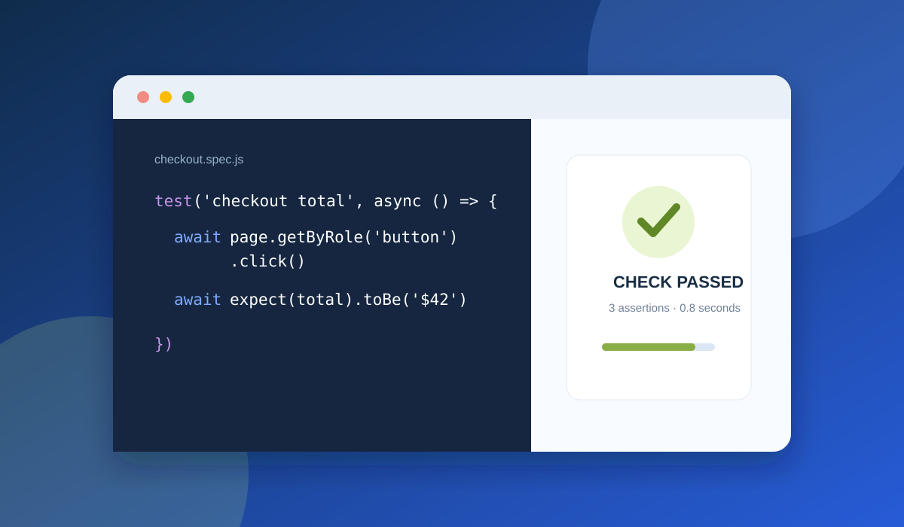

ADVANCED DELIVERY · INTERMEDIATE
CI/CD quality engineering
Design a quality signal from commit to release. Balance fast feedback, dependable checks, environment confidence, and clear release decisions across a delivery pipeline.
What you will learn
- Place checks at the right stage based on cost and feedback time.
- Design test data and environments for repeatable runs.
- Triage failures without normalizing flaky or ignored signals.
- Use release evidence and ownership to improve pipeline health.
Course lessons
1. Design the feedback path
Map a change from commit through build, test, staging, and release. Put fast checks near the start and broader, slower checks later. Include unit, API or integration, and a small set of critical user journeys where they provide distinct evidence. Avoid repeating expensive checks without a reason.
2. Make pipeline checks reproducible
Version test code with the product, record important dependencies, and define environment setup explicitly. Create isolated test data and clean it after a run. Tests should not depend on execution order or an individual workstation. Store logs, screenshots, and reports so the team can inspect failures.
3. Keep signals trustworthy
A red pipeline should mean something actionable. Classify failures as product defects, test defects, infrastructure issues, or data problems. Track flaky checks and assign owners to fix them. Retries can help diagnose transient faults, but should not silently turn an unreliable signal green.
4. Set release gates around risk
Define which failures block a release and who can make an exception. Use agreed thresholds for critical flows, security checks, and high-impact risks. Keep the decision visible with build version, test scope, unresolved issues, and evidence. A gate makes risk explicit; it does not promise defect-free software.
5. Practice: propose a pipeline for a checkout change
Sketch stages for build, fast checks, API integration, browser flow, and pre-release verification. For each, record duration, purpose, owner, and failure meaning. Decide how test accounts and sandbox data are reset. Add a triage path for flaky failures and define evidence a release approver should see.